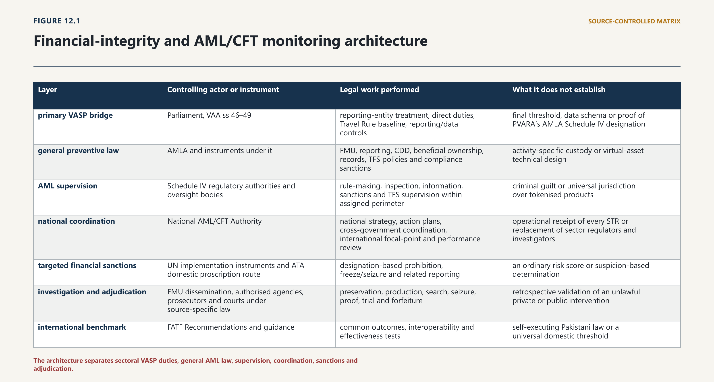
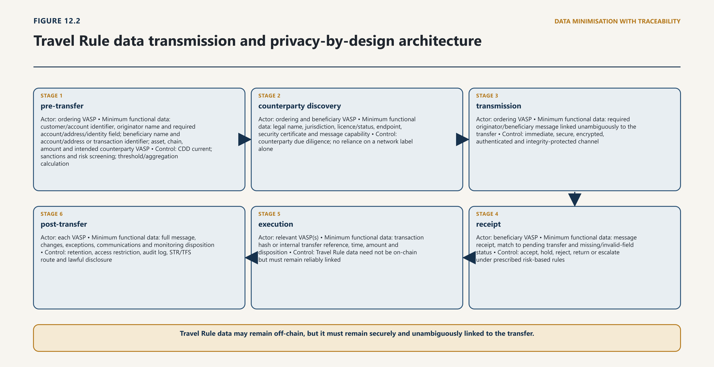

Chapter Twelve · Part 3
Financial Integrity, Sanctions and Evidentiary Enforcement
Chapter Summary
1
This chapter integrates VASP coverage, risk assessment, customer due diligence, beneficial ownership, transaction monitoring, STRs, CTRs, targeted financial sanctions and the Travel Rule. It then follows information into investigation, preservation, attribution and enforcement. Particular attention is given to regulator allocation, protected reporting channels and the difference between a blockchain trace and proof of identity, knowledge or criminal purpose.
Detailed Contents
12.1 Risk and Legal Architecture
12.1.1 AMLA 2010, counter-terrorism law and sanctions
2
Financial-integrity law loses accuracy when different legal states are compressed into the word “risk”. Suspicion is not guilt. A report is not a charge. A sanctions-screening match is not identity. A blockchain-analytics score is not proof. A freeze is not forfeiture. A VASP licence is not, by itself, a complete allocation of AML supervision. Each state has a different actor, legal trigger, information set, consequence and route of review.
3
AMLA makes the FMU Pakistan’s financial-intelligence unit. It receives and analyses STRs and CTRs, may call for records, disseminates financial intelligence under confidentiality controls, maintains domestic and foreign linkages, and permits the Director General in the conditions of section 6(6) to order a temporary freeze for up to fifteen days. Section 6A assigns preventive supervision to the regulators and self-regulatory oversight bodies listed in Schedule IV. The distinction is foundational: FMU owns the intelligence-reporting channel; the assigned regulator owns compliance supervision; an investigator exercises powers under its enabling law; a court determines matters allocated to it.1
4
The National AML/CFT Authority, established in 2023, is the policy and coordination body for strategy, action plans, legislative review, international engagement and performance. It can expose institutional gaps; it cannot merge member institutions or reallocate coercive powers by committee decision.2
5
Risk assessment must be dated and scoped. Pakistan’s 2023 NRA assessed VAs/VASPs as an “unregulated emerging area” only to the extent of available data and rated virtual currency as a medium terrorist-financing channel. It is not a 2026 finding that every licensed VASP, token or wallet is high risk.3
12.1.2 Virtual-asset-specific allocation under the 2026 framework
6
Pakistan’s starting point is nevertheless stronger than a voluntary or guidance-only model. Section 46 of the Virtual Assets Act 2026 deems a licensed VASP to be a “financial institution” for purposes of the Anti-Money Laundering Act 2010. It directly requires every VASP and issuer to report suspicious transactions to the Financial Monitoring Unit (FMU), keep customer-due-diligence and transaction records, and maintain internal AML/CFT and counter-proliferation-financing controls under a designated officer. Section 47 creates a Travel Rule duty at the threshold to be prescribed by PVARA. Sections 48 and 49 add secure reporting interfaces and limits on non-essential processing.4

7
Source and accessible description. Author's synthesis from the Virtual Assets Act 2026, the Anti-Money Laundering Act 2010, the National Anti-Money Laundering and Counter Financing of Terrorism Authority Act 2023, targeted-financial-sanctions instruments and FATF guidance cited in this chapter. Diagram mapping Parliament and the Virtual Assets Act to PVARA supervision, FMU reporting and analysis, national coordination, sanctions implementation, investigators and courts, with FATF standards shown as a benchmark rather than domestic law.
8
The legal architecture is therefore a chain, not a single statute:
| Layer | Controlling actor or instrument | Legal work performed | What it does not establish |
|---|---|---|---|
| primary VASP bridge | Parliament, VAA ss 46–49 | reporting-entity treatment, direct duties, Travel Rule baseline, reporting/data controls | detailed interoperability schema or proof of PVARA’s AMLA Schedule IV designation |
| general preventive law | AMLA and instruments under it | FMU, reporting, CDD, beneficial ownership, records, TFS policies and compliance sanctions | activity-specific custody or virtual-asset technical design |
| AML supervision | Schedule IV regulatory authorities and oversight bodies | rule-making, inspection, information, sanctions and TFS supervision within assigned perimeter | criminal guilt or universal jurisdiction over tokenised products |
| national coordination | National AML/CFT Authority | national strategy, action plans, cross-government coordination, international focal-point and performance review | operational receipt of every STR or replacement of sector regulators and investigators |
| targeted financial sanctions | UN implementation instruments and ATA domestic proscription route | designation-based prohibition, freeze/seizure and related reporting | an ordinary risk score or suspicion-based determination |
| investigation and adjudication | FMU dissemination, authorised agencies, prosecutors and courts under source-specific law | preservation, production, search, seizure, proof, trial and forfeiture | retrospective validation of an unlawful private or public intervention |
| international benchmark | FATF Recommendations and guidance | common outcomes, interoperability and effectiveness tests | self-executing Pakistani law or a universal domestic threshold |
9
Every control must answer: who owes it; what triggers it; what data moves to which institution; what action follows; and how error is corrected.
12.2 Reporting-Entity and VASP Coverage
12.2.1 Persons, functions and thresholds
10
The VAA uses a direct statutory bridge for licensed VASPs. Section 46(1) says they are deemed financial institutions for AMLA purposes. That is important because AMLA’s pre-existing financial-institution definition is activity based—it includes money or value transfer, payment means, safekeeping or administration of cash or liquid securities, management of another person’s funds, financial intermediation and related activities—but was not written as a complete virtual-asset taxonomy. Deeming avoids requiring every licensed exchange, broker, transfer provider or custodian to be forced analogically into a legacy category before core AML duties attach.5
11
Coverage must still be stated by legal status and activity:
| Actor or arrangement | Financial-integrity position | Required control |
|---|---|---|
| PVARA-licensed VASP | deemed AMLA financial institution; direct VAA s 46 duties | full AML/CFT/CPF programme, CDD, records, monitoring, STR reporting, TFS and Travel Rule at or above the PKR equivalent of USD 1,000 under regulation 100 |
| person holding an interim NOC, sandbox admission or incubation approval | depends on the exact instrument and transition clause; not automatically identical to a final licence | verify instrument, scope, conditions, reporting-entity basis, goAML registration and transition deadline before operation |
| issuer that is also a licensed VASP | both statuses apply; duties may overlap | one controlled programme with product-specific issuer and transfer risks, without double counting reports |
| issuer that is not a licensed VASP | VAA s 46(2) directly names issuers, but the AMLA reporting-entity, supervisor, sanctions and protection route requires express completion | primary or valid delegated bridge identifying supervisor, FMU channel, CDD/record duties, sanctions and appeals |
| bank, EMI, payment provider, broker or securities intermediary dealing with VAs | remains within SBP or SECP perimeter in addition to any VASP status | coordinated supervision; no lowest-standard arbitrage |
| foreign VASP serving Pakistan | VAA territorial and licensing rules apply where the statutory nexus is met; foreign licensing does not displace Pakistan law | local permission and accountable presence or enforceable cooperation, plus counterparty due diligence |
| pure software, self-hosted wallet user or genuinely decentralised protocol | not a VASP merely because technology facilitates transfers | control and activity test; regulate the person performing covered services, not code as if it were a legal person |
12.2.2 Issuer, DeFi and non-custodial gaps
12
The issuer sentence exposes a real plumbing problem. Section 46(2) directly orders every “Virtual Asset Service Provider and Issuer” to report STRs, retain records and maintain controls. But AMLA defines a reporting entity as a financial institution, DNFBP or other notified person, while VAA section 46(1) deems only licensed VASPs—not every issuer—to be a financial institution. If a non-VASP issuer is not otherwise a reporting entity, legislation must still identify how AMLA protections, FMU reporting, CDD triggers, supervisory inspection, administrative sanctions and appeal attach. An obligation should not be announced without the institution capable of supervising it.
13
There is a related regulator-allocation problem. The official AMLA consolidation inspected for this chapter lists SBP, SECP, FBR, the National Savings supervisory board, Pakistan Post supervisory board and any additional notified regulator in Schedule IV. It is updated to 2 September 2022 and therefore predates PVARA. Section 46(3) of the VAA orders PVARA to align its supervisory framework through AML/CFT/CPF Regulations, but that provision is not textually the same as adding PVARA to AMLA Schedule IV. Official searches refreshed on 28 August 2026 did not locate a Gazette notification completing that step. The responsible conclusion is not that no notification can exist; it is that the material located does not prove the allocation. The Government should publish the operative instrument if it exists or promptly notify or amend Schedule IV if it does not.6
14
Transitional labels require discipline. The 2026 PVARA Regulations are now notified, while an NOC, sandbox admission or consultation-stage application does not silently acquire the legal effects of a licence. For each operating firm, PVARA and FMU should maintain a non-public status record showing the legal person, beneficial owners and controllers, permission type, authorised services, effective and expiry dates, conditions, assigned AML supervisor, MLRO, goAML organisation identifier, bank relationship, foreign permissions and transition date. A public register should disclose permission type and scope without exposing sensitive reporting data.
15
Perimeter control should be functional and anti-evasive. Splitting exchange, custody and transfer across related companies does not eliminate group risk; nor does outsourcing screening or Travel Rule messaging eliminate the licensed entity’s duty. Conversely, incidental software development, non-custodial interface provision or protocol publication should not be declared regulated activity without the statutory service and control facts. The same evidence must support both inclusion and exclusion.
16
“DeFi” similarly describes architecture, not a legal exemption or legal person. FATF’s functional approach asks whether creators, owners, operators or other persons retain control or sufficient influence and perform VASP functions, even where software presents itself as decentralised. The analysis should test:
| Control surface | Evidence to examine | Regulatory significance |
|---|---|---|
| upgrade, pause, mint, seize or parameter keys | key holders, replacement power, multisig quorum and actual use | ability to control core service or customer exposure |
| front-end and API | operator, geoblocking, fees, order routing and custody connections | performance or facilitation of covered service for users |
| treasury and fee switch | beneficial recipients, discretionary allocation and revenue dependence | economic control and service business evidence |
| governance | token concentration, delegation, veto, quorum, off-chain agreements and emergency councils | effective influence, not merely formal voting percentages |
| oracle, bridge and validator dependencies | selection, replacement, concentration and contractual control | operational control and third-party risk |
| development and brand | company/foundation role, employment, repositories, marketing and user commitments | relevant context but not alone conclusive |
17
The conclusion must identify a person and covered activity. Code cannot file an STR, appoint an MLRO, receive notice or exercise an appeal. If no person performs or controls the regulated service on the evidence, calling the protocol a VASP does not solve supervision. If an identifiable person does, “decentralised” branding does not remove the duty.7
18
VASP interaction with DeFi should still be controlled where no DeFi operator is regulated. Product approval should evaluate contract risk, administrator powers, sanctions and illicit-finance exposure, oracle and bridge dependencies, liquidity, transaction finality, customer disclosure, monitoring coverage, custody consequences and incident response. The control is placed on the licensed entity’s decision to provide access or transfer; it should not claim jurisdiction over a technical protocol beyond the statute.
12.3 Risk Assessment and Customer Due Diligence
12.3.1 Identification, verification and ongoing monitoring
19
AMLA requires CDD when a reporting entity enters a business relationship, conducts an occasional transaction above the prescribed threshold, encounters suspicion regardless of exemptions or thresholds, or doubts previously obtained information. It requires identity verification from reliable and independent sources, identification and reasonable verification of the beneficial owner, understanding of purpose and intended nature, and ongoing monitoring. Failure to complete required CDD means the entity should not open or perform the transaction, or should terminate the relationship, and should consider an STR. Anonymous or fictitious relationships are prohibited.8
20
For a VASP, those rules should operate across an enterprise risk assessment and a customer risk assessment. The enterprise assessment should consider at least:
21
authorised services and actual transaction patterns, not merely licence labels;
22
custody model, private-key and administrator-key concentration, smart-contract upgrade powers and reliance on third-party wallets;
23
customer types, beneficial-ownership opacity, PEP exposure, legal-person and arrangement use, nominees and cross-border groups;
24
asset characteristics, including transferability, liquidity, privacy features, governance, issuer or reserve structure, bridge and mixer exposure, without declaring a technology inherently illicit;
25
delivery channels, remote onboarding, devices, account recovery, API access, agents and introducers;
26
geographic exposure, current sanctions and FATF statements, legal interoperability and counterparty-VASP quality;
27
fiat entry and exit, bank and payment partners, cash exposure, OTC desks and mule-account indicators;
28
fraud, cyber compromise, ransomware, market abuse, tax-crime and proliferation-financing typologies that may generate predicate or associated risk; and
29
data confidence, model limitations, false-positive rates and the availability of reliable independent verification.
30
The customer assessment then asks what those factors mean for the actual relationship. Standard CDD should obtain the natural person’s verified identity and contact information, expected purpose, occupation or business, source of funds where risk or product requires it, wallet and account relationships, expected volume and geography, beneficial owner and controller, and the authority of anyone acting for another. Legal persons require constitutive and registry information, registered and operating address, directors or equivalent officers, ownership chain, natural-person beneficial owner, purpose, expected counterparties and evidence of authority. Legal arrangements require the settlor, trustee, protector where any, beneficiaries or class, other effective controller and the person providing assets.
12.3.2 Enhanced due diligence and source of funds or wealth
31
Enhanced due diligence is a response to higher risk, not a euphemism for automatic refusal. Measures may include stronger identity proof, independent corporate documents, source-of-wealth and source-of-funds corroboration, senior approval, shorter review cycles, transaction limits, wallet ownership/control testing, counterparty-VASP verification, deeper reserve or issuer inquiry and enhanced monitoring. A politically exposed person is a risk-management category requiring source and approval measures under the applicable framework; it is not an allegation of crime.
32
Reliance and outsourcing must preserve accountability. A VASP may use an identity vendor, blockchain-analytics provider, Travel Rule network, foreign affiliate or bank information where law permits, but should know what was checked, obtain the underlying evidence without delay, test the provider, understand geographic and model limits, control subcontracting and retain a fallback. A vendor’s “verified” flag is not a legal conclusion when the vendor never checked the beneficial owner or the customer’s authority over a wallet.
33
FATF’s 2019 guidance supplies a useful benchmark: apply CDD to occasional VA transactions above USD/EUR 1,000, use risk-based enhanced controls rather than categorical assumptions, and coordinate Travel Rule implementation with privacy and data-protection authorities. It remains an international benchmark rather than Pakistani legislation. Pakistan has now adopted the PKR equivalent of USD 1,000 for qualifying virtual-asset transfers in regulation 100 of the Pakistan Virtual Asset Services Regulations 2026; the domestic obligation rests on that notified instrument and its parent Act, not on FATF guidance alone.9
34
CDD is therefore a continuing evidential process. An address check at onboarding does not control a relationship after a change in ownership, device, product, transaction pattern or sanctions exposure. VASPs should define event-driven refresh triggers as well as periodic review. A change should record its source, reviewer, effect on risk, information obtained and any monitoring consequence. They should also record why a control was proportionate: excessive data collection creates privacy, security and exclusion risk without necessarily improving detection.
12.4 Beneficial Ownership and Actual Control
12.4.1 Corporate, protocol and wallet control
35
AMLA defines a beneficial owner as the natural person who ultimately owns or controls a customer, or on whose behalf a transaction is conducted, including a person exercising ultimate effective control over a legal person or legal arrangement. The enquiry therefore ends with a natural person unless the applicable law provides a carefully defined fallback after documented exhaustion. A company name, nominee shareholder, trust label, exchange account or wallet address is a starting point, not the answer.10
36
Virtual-asset systems add technical control facts that must be connected to, but not confused with, legal ownership:
| Control fact | What it can show | What further question remains |
|---|---|---|
| signature from a private key | present ability to authorise a transaction | whether the signer owns the asset or acts lawfully for another |
| custody account in a customer’s name | platform attribution and contractual account | whether the named person is the beneficial owner and whether the platform controls an omnibus wallet |
| multisignature membership | part of the approval quorum | who selects members, changes quorum, replaces keys or directs votes |
| smart-contract administrator or upgrade key | ability to change, pause, mint, seize or redirect the system | who ultimately controls the administrator and under what legal duty |
| governance-token concentration | possible influence over protocol decisions | delegation, coordination, vetoes, off-chain control and whether service activity is actually performed |
| proof-of-control message from a self-hosted wallet | control of the signing credential at that time | identity, beneficial ownership, source of assets and compromise/coercion risk |
| transaction-graph association | technical relationship or exposure under the vendor’s model | attribution, timing, amount, model assumptions and innocent explanations |
37
For licensed entities, beneficial-ownership analysis should connect four maps: legal ownership; voting and appointment rights; economic entitlement; and operational/technical control. VAA controller thresholds and licensing disclosures can identify formal controllers, but an AML enquiry should also capture acting-in-concert arrangements, side agreements, financing dependence, nominees and persons with decisive negative rights. A percentage is a rule for identifying mandatory cases, not permission to ignore effective control below it.
38
The same method applies to customers. For a corporate treasury using several wallets, the VASP should identify the company’s natural-person beneficial owner, the authorised officers, the persons able to sign or reset credentials, and the purpose of each wallet. For a trust or arrangement, it should identify the statutory beneficial-ownership parties and separately record who controls the relevant keys. For an agent or broker, it must determine whether the broker is the customer, acts for disclosed principals, or is improperly shielding them.
39
The notified PVARA Regulations now control the requirements for governance, risk assessment, CDD, analytics, transaction monitoring, the Travel Rule, targeted financial sanctions and record keeping. The final text must be read with the AMLA definition and the Virtual Assets Act’s controller-disclosure requirements. A technical proof-of-wallet procedure cannot, without more, establish beneficial ownership.
12.4.2 Nominees, DAOs and complex arrangements
40
False precision is a particular danger. A protocol can be influenced through a foundation, development company, validator concentration, front-end, fee switch, oracle, treasury, governance delegation, upgrade key or dominant commercial relationship. “Decentralised” is not dispositive, but neither is participation in development enough to establish control. The question is whether an identifiable person performs or controls a covered service for or on behalf of another and can change, restrict, profit from or direct material operations. The evidence and reasoning should be recorded for both a decision to regulate and a decision not to regulate.
41
Beneficial-ownership records must be refreshable and reconcilable. Changes in corporate registries, shareholder agreements, wallet signers, administrator keys, governance delegation or adverse information should trigger review. Where information conflicts, the VASP should resolve the inconsistency or restrict the relationship and consider reporting; it should not merely store contradictory documents and call the file complete.
12.5 Transaction Monitoring, STRs, CTRs and goAML
12.5.1 Indicators, escalation and reporting
42
AMLA section 7 requires a reporting entity to file an STR promptly where it knows, suspects, or has reason to suspect that a transaction or pattern involves proceeds, evades AMLA requirements, lacks an apparent lawful purpose after examination of available facts, or involves terrorist financing. All CTRs must be filed within seven working days. The 2025 reporting regulations require examination of available facts, risk-based alerts and red flags, prompt STR submission through goAML in the form required by FMU, and immediate written notice to the Director General where a potential temporary freeze under section 6(6) is required.11
43
The monitoring lifecycle should be auditable from event to outcome:
| Stage | Minimum record | Decision control |
|---|---|---|
| data capture | customer/account, asset, chain, address, transaction hash, time, amount and valuation, fiat leg, device/API, counterparty and Travel Rule fields | completeness, clock and asset-identifier checks |
| alert | rule/model version, factor, threshold, source data and generated time | no adverse action solely because an opaque vendor score exists |
| triage | obvious data or list errors, duplicate alerts, customer context, exposure path and urgency | priority rules; independent sanctions route where applicable |
| investigation | transaction pattern, beneficial owner, source/destination, off-chain records, customer explanation, prior alerts and linked accounts | proportionate information request; no tipping off |
| disposition | reasoned close, enhanced monitoring, restriction, exit, STR, sanctions action or law-enforcement preservation | authorised reviewer and conflict control |
| report | statutory trigger, narrative, actors, chronology, identifiers, amounts, supporting documents and urgency | submit to FMU alone through the required confidential route |
| feedback and tuning | FMU/regulator feedback, confirmed typology, false positives and missed cases | controlled model change with validation and approval |
44
On-chain and off-chain information must be joined. A public ledger can show that an address sent a quantity of a token to another address at a time and block height. It may not show the natural person, authority, source of funds, reason for transfer, internal platform allocation, fiat leg or whether the transaction succeeded economically. An internal ledger can show customer attribution and net balance while omitting the external path. Effective monitoring reconciles both and preserves the uncertainty.
12.5.2 Quality, proportionality and recordkeeping
45
A system alert is not yet statutory suspicion. The reporting entity should examine the available facts and state the reason for its disposition. It need not prove the predicate offence before reporting. Equally, it should not file defensive reports containing unanalysed transaction dumps simply because a vendor label is severe. The narrative should tell FMU what happened, why it is suspicious, who may be involved, which identifiers and counterparties matter, what action the VASP took, and what information remains uncertain.
46
CTR must remain separate. Under the 2025 regulations it is a report of a cash transaction at or above the threshold specified by the National Executive Committee, filed within seven working days. A VA transfer is not transformed into cash because its value exceeds a benchmark. Where an OTC transaction has a physical-cash leg, the cash report may apply; where it is purely on-chain, the relevant routes are monitoring, STR and Travel Rule. Structuring below a threshold may itself contribute to suspicion, but does not justify rewriting the CTR definition.12
47
goAML is the FMU submission and data-exchange software. It is not the legal test for suspicion, a public accusation register, or automatic permission for every agency to browse customer records. The VASP forms the suspicion under law, submits the report through goAML, and protects its confidentiality. FMU analyses and disseminates under its statute. PVARA may receive supervisory information through a separately lawful route, but STR content and access should follow the AMLA allocation rather than a general “real-time access” label.13
48
Confidentiality and retention require category mapping. AMLA protects STR/CTR secrecy and prohibits tipping off; the reporting regulations require assistance to remain confidential. Section 7(4) requires STR/CTR records for ten years, while section 7C generally requires transaction and CDD records for at least five years after the transaction or relationship. VAA section 47 requires Travel Rule and CDD records for no less than the AMLA period. A compliant schedule should therefore identify record category, start event, minimum period, legal hold, access, encryption, deletion and cross-border location. “Keep everything forever” is neither a retention rule nor a security policy.
12.6 Targeted Financial Sanctions
12.6.1 Freezing, prohibition and reporting
49
“Sanctions” describes at least two different regimes. The AML/CFT Sanctions Rules 2020 provide administrative consequences for preventive-compliance failures: monetary penalties, conditions or restrictions, licence revocation, officer disqualification, censure and remedial directions, with proportionality factors, a due-diligence defence, written notice, appeal and publication of significant sanctions. Targeted financial sanctions (TFS), by contrast, implement designation-based prohibitions and freezing duties under UN and domestic counter-terrorism law. A compliance penalty after breach is not the same event as freezing designated property without delay.14
50
Pakistan’s domestic route under the Anti-Terrorism Act 1997 includes proscription of organisations and persons on statutory grounds and review mechanisms. Section 11O provides, upon proscription, for freezing or seizure without prior notice and without delay of money or other property owned or controlled wholly or jointly, directly or indirectly, including derived property and property of persons acting on behalf or at the direction of the prescribed person. Action must be reported within forty-eight hours; the Government must inquire into ownership and control and immediately release wrongly frozen or seized property. Sections 11OO and following provide access to basic or extraordinary expenses, legal fees and judicial attachment or forfeiture routes. The UN route is separately grounded in the United Nations (Security Council) Act 1948 and the Federal Government’s implementing orders; MOFA maintains the official sanctions architecture and current-list pages.15
51
The operational decision sequence should be explicit:
52
ingest the current official UN and domestic lists through controlled sources and record list version, publication time and ingestion time;
53
screen customers, beneficial owners, controllers, authorised users, counterparties, addresses and relevant issuers at onboarding, list update and transaction time;
54
treat a potential name or identifier match as an alert, resolving identity with aliases, date/place of birth, nationality, identifiers, corporate data and other reliable information;
55
where identity is confirmed or the applicable ownership/control rule is met, act without delay under the correct legal instrument and do not wait for an STR threshold, investigation or conviction;
56
block prohibited dealing and preserve the affected property and records without treating the property as transferred to the VASP or State;
57
report through the instrument-specific channels, while making any independently required STR confidentially to FMU;
58
protect non-designated customer assets, resolve false positives quickly, and provide the applicable review, delisting and expense routes; and
59
maintain a complete decision and custody record for supervision and proceedings.
60
Name screening alone is insufficient. Ownership and control can operate through companies, trusts, nominees, joint property, multisignature arrangements, custodians and persons acting on another’s direction. Conversely, a shared name, remote transaction-graph link or historical receipt from an address does not automatically prove that the current customer is designated or controlled. Both over-freezing and under-freezing are control failures.
12.6.2 Proliferation financing and cross-border coordination
61
Proliferation financing needs an express module, not a passing reference to terrorist financing. AMLA defines proliferation financing and requires policies and procedures to implement TFS obligations; VAA section 46 requires AML/CFT/CPF controls. A VASP’s assessment should address trade and corporate opacity, dual-use procurement, front companies, sanctions evasion, maritime and logistics indicators where relevant, state-linked or controlled counterparties, stable-value settlement, rapid layering, chain hopping and use of intermediaries. The entity should not attempt to adjudicate geopolitical guilt. It should apply current legal designations, identify suspicious financial behaviour, preserve evidence and report through the correct route.16
62
Issuer and token controls are material. An FRT, ART, tokenised claim or issuer-controlled smart contract may allow minting, redemption, pausing, clawback or blacklisting. The existence of a technical function does not create authority to use it; the absence of one does not remove the legal duty to prevent dealing. Product approval should document which sanctions actions are technically possible, who can authorise them, how wrong action is reversed, how reserves and customer entitlements are protected, and what happens when a foreign custodian or decentralised system cannot execute the required control.
63
TFS effectiveness is measured by speed and accuracy together. “Without delay” is defeated by stale lists, weekend gaps, manual escalation without authority or uncertainty over token control. Legality is defeated by secret private lists, indefinite unresolved holds, failure to examine ownership, or denial of statutory expenses and review. A well-designed regime makes urgent action possible because the legal basis, escalation, technical custody and correction route were built before the alert.
12.7 Travel Rule
12.7.1 Originator and beneficiary information
64
The Travel Rule connects identity and transfer data that a blockchain address alone does not supply. VAA section 47 requires a licensee, for a transfer meeting or exceeding the threshold prescribed by PVARA, to obtain, hold and transmit originator and beneficiary information in a manner consistent with FATF standards. It requires compliance with applicable data-protection, data-governance and cybersecurity law, permits PVARA to prescribe procedures, standards and formats, and requires retention no shorter than the AMLA period. The enacted duty is now operationalised by regulation 100 of the Pakistan Virtual Asset Services Regulations 2026 at the PKR equivalent of USD 1,000. Detailed interoperability, valuation and error-handling specifications remain implementation work, but the notified threshold and core data duties are no longer consultation-stage proposals.17

65
Source and accessible description. Author's synthesis from section 47 of the Virtual Assets Act 2026, regulation 100 of the Pakistan Virtual Asset Services Regulations 2026 and the FATF materials cited in this chapter. Six-stage flow showing customer and beneficiary data moving from the ordering VASP through counterparty discovery and a secure off-chain message to the beneficiary VASP, with the message linked to the on-chain transfer and retained for audit, reporting and correction.
66
FATF’s 2019 guidance supplies the baseline design. For a qualifying VA transfer, the ordering VASP should obtain and hold accurate required originator information and required beneficiary information and submit that information immediately and securely to the beneficiary VASP or financial institution. The beneficiary VASP should obtain and hold it. FATF used USD/EUR 1,000 as the occasional-transaction CDD and VA-transfer benchmark, with a reduced mandatory data set at or below that level unless suspicion or another requirement applies. The data should not be exposed on a public ledger merely because the value transfer is on-chain.18
67
A lawful Pakistan data path should identify each stage:
| Stage | Actor | Minimum functional data | Control |
|---|---|---|---|
| pre-transfer | ordering VASP | customer/account identifier, originator name and required account/address/identity field; beneficiary name and account/address or transaction identifier; asset, chain, amount and intended counterparty VASP | CDD current; sanctions and risk screening; threshold/aggregation calculation |
| counterparty discovery | ordering and beneficiary VASP | legal name, jurisdiction, licence/status, endpoint, security certificate and message capability | counterparty due diligence; no reliance on a network label alone |
| transmission | ordering VASP | required originator/beneficiary message linked unambiguously to the transfer | immediate, secure, encrypted, authenticated and integrity-protected channel |
| receipt | beneficiary VASP | message receipt, match to pending transfer and missing/invalid-field status | accept, hold, reject, return or escalate under prescribed risk-based rules |
| execution | relevant VASP(s) | transaction hash or internal transfer reference, time, amount and disposition | Travel Rule data need not be on-chain but must remain reliably linked |
| post-transfer | each VASP | full message, changes, exceptions, communications and monitoring disposition | retention, access restriction, audit log, STR/TFS route and lawful disclosure |
68
The originator data set should distinguish name; account number or unique transaction identifier; and the additional identity field or fields required by the adopted standard, such as address, national identity or customer identification number, or date and place of birth. The beneficiary set should include name and account number, wallet address or other unique transaction identifier. A final Pakistan instrument should specify which fields are mandatory above and below the domestic threshold, field syntax, character set, legal-person identifiers, name-screening quality, address formats, multi-asset identifiers and error codes. “FATF compliant” is not a data dictionary.
69
Travel Rule data should move separately but synchronously with the value-transfer instruction. Putting personal information in calldata, a token memo or another permanent public field can make it globally visible, immutable and difficult to correct. A secure off-chain messaging protocol, direct bilateral channel or other mechanism can comply if it authenticates the parties, protects confidentiality and integrity, links the message to the transfer, preserves availability, supports correction and records the decision. PVARA should permit interoperable methods that meet outcomes rather than mandate one private vendor.
70
Accordingly, keeping personally identifiable information off-chain should be the privacy-by-design default for regulatory standards and system architecture unless a defined lawful purpose, necessity assessment and technical safeguard justify another treatment. That is a recommended design standard, not a statement that present Pakistani law imposes an absolute prohibition on every on-chain personal-data field.
71
Data protection is part of compliance, not an exception to it. VAA section 49 limits collection, use and sharing to necessary or lawful purposes and requires informed consent for non-essential processing. Travel Rule processing should instead be anchored in the statutory obligation, necessity and the applicable lawful-transfer basis; consent should not be presented as freely optional where refusal prevents a legally required transfer. The VASP should minimise fields, encrypt data in transit and at rest, segregate Travel Rule and marketing uses, control staff access, test vendors, manage foreign transfers, notify breaches as required, honour lawful correction and deletion subject to retention/legal holds, and document privacy and security assessments.19
12.7.2 Thresholds, self-hosted wallets and interoperability
72
Counterparty-VASP due diligence is distinct from customer CDD. Before relying on another provider, a licensee should verify the provider’s legal identity, relevant jurisdiction and permission, physical or accountable presence, AML supervisor, ownership/control, sanctions exposure, Travel Rule capability, security, data location, breach history, response route and treatment of missing information. A foreign registration or network membership is evidence, not a passport into Pakistan. The intensity should reflect volume and risk and should be refreshed when status changes.
73
Missing or late data requires controlled choices. The notified risk-based framework should be implemented without a mechanical universal answer—always execute, always reject, or always freeze—because the legal consequence depends on amount, suspicion, sanctions, customer risk, reason for failure, counterparty quality and whether the message can be cured. The beneficiary VASP should be able to hold a transfer in a segregated pending state, request missing information, reject or return it, restrict the counterparty, apply enhanced monitoring or file an STR. A sanctions match uses the separate TFS route and cannot wait for ordinary remediation.
74
There is no universal domestic Travel Rule threshold. FATF’s benchmark is USD/EUR 1,000. United States funds-transfer rules, as explained by FinCEN, generally apply the funds Travel Rule to transmittals of funds of USD 3,000 or more and require specified transmittor and recipient information. Other jurisdictions use their own legislation, including zero-threshold or different data approaches. The foreign rule binds through its own legal nexus; it does not become Pakistan law merely because a counterparty VASP applies it.20
75
VAA section 47 assigns Pakistan’s threshold to PVARA. The notified Regulations now control the operative domestic number. Regulation 100(2) of the Pakistan Virtual Asset Services Regulations 2026 fixes the operative threshold at the PKR equivalent of USD 1,000. The earlier consultation text is historical only. The notified instrument supplies the parent power, publication date and core prescription; implementation standards should now settle the remaining operational matters:
76
the number and currency or benchmark, including whether different data obligations apply above and below it;
77
the authoritative conversion source, valuation timestamp, treatment of spreads and unavailable/stale prices;
78
asset identification, including wrapped assets, stable-value assets, illiquid tokens and transfers with several assets;
79
aggregation of linked transfers by customer, beneficiary, counterparty, device, address and time window;
80
anti-structuring treatment, while preserving the independent suspicion test at every amount;
81
which event measures the threshold—order, acceptance, broadcast, confirmation, settlement or credit;
82
treatment of internal ledger transfers, failed transactions, fee-only transfers, refunds, returns, batching, UTXO change and smart-contract interactions;
83
responsibilities where more than one VASP participates, or where a bank or payment provider controls a fiat leg;
84
rules for unavailable or conflicting counterparty requirements; and
85
change control, notice, grandfathering and machine-readable publication.
86
Thresholds ration a minimum data duty; they do not create a safe harbour. A transfer below the number remains subject to sanctions, suspicion, CDD where otherwise triggered, monitoring and any verified customer data requirement. A transfer above it does not become suspicious by amount alone. The system should record both the threshold decision and the independent risk decision.
87
A transfer involving a self-hosted or unhosted wallet has only one regulated VASP endpoint. It does not have no identifiable actor: the VASP still knows its customer and can collect the intended counterparty, purpose, wallet, asset and transaction information. It also does not automatically have a second VASP capable of receiving a Travel Rule message. Regulation 100(7)(a) recognises that difference and requires risk-based controls rather than deem the customer to be a VASP or prohibit the transfer categorically.
88
Risk-based controls can include obtaining the counterparty’s name and wallet address, checking sanctions and transaction exposure, asking the customer about purpose and relationship, testing wallet control where proportionate, applying limits or enhanced review, and monitoring the completed transaction. A cryptographic signature, micro-transaction or other proof can show control of a wallet credential; it does not prove legal identity, beneficial ownership, lawful source or freedom from compromise. Proof methods should not create disproportionate surveillance or force customers to reveal unrelated wallet history.
89
Restrictions require evidence and a source. A privacy-enhancing asset, mixer exposure, bridge, peer-to-peer transfer or self-hosted wallet may increase opacity or complicate counterparty verification in particular facts. None is inherently proof of laundering. The VASP should record the exposure path, timing, value, service attribution, model confidence, customer explanation and other facts. It may then apply enhanced controls, decline an unsupported risk, or report suspicion. A private vendor’s label should not become an unpublished prohibition of general application.21
90
Cross-border interoperability also requires a conflict rule. The ordering VASP may face Pakistan’s minimum fields, a beneficiary jurisdiction’s additional fields, privacy or localisation restrictions and a counterparty protocol’s technical requirements. Implementation standards should permit additional necessary fields where lawfully required, but require the VASP to identify the legal basis, minimise data and prevent foreign commercial preferences from silently expanding collection for all Pakistani customers. If transfer is legally impossible, the entity should reject or return it with an auditable reason rather than leak data through an insecure workaround.
91
FATF revised Recommendation 16 in June 2025 and stated that the changes should apply by the end of 2030. Pakistan’s present rule should therefore be standards-aware but legally time-correct: implement the current VAA and applicable FATF baseline now, design fields and systems that can migrate, and amend the domestic instrument through lawful process when the revised international requirements become applicable. A future standard cannot be backdated into a present offence or sanction.22
92
The transition should use a published “sunrise” sequence: notified rule and published schema; provider registration; test environment; bilateral and network conformance; production for high-capability corridors; monitored exception period; full enforcement; and periodic review. Each stage should identify what duty applies, what evidence PVARA will inspect and what happens when a foreign provider cannot receive the message. Delay should not be disguised as permanent “testing”, and early participants should not be sanctioned for requirements that were unpublished or technically unavailable.23
93
FATF’s 2025 targeted update found that implementation and enforcement of the Travel Rule remained incomplete across jurisdictions. That fact counsels a managed interoperability period, not postponement of Pakistan’s rule. PVARA should publish conformance tests, message examples, counterparty-failure handling and a staged transition, while retaining direct supervisory access to evidence of compliance rather than to unrestricted customer data.24
12.8 Investigations and Digital Evidence
12.8.1 Wallet attribution, tracing and exchange records
94
Wallet attribution must preserve the distinction between an observable ledger fact, a platform or account attribution, control of a credential, legal or beneficial ownership, knowledge and purpose. The file should retain the node or explorer source, block height, transaction hash, clustering method, analytics-provider version and confidence, exchange and internal-ledger records, CDD, device evidence and any corroborating communications. No single address, cluster or vendor label should be presented as conclusive proof.
95
Financial-integrity systems generate leads and preserve records; they do not confer every investigative power on PVARA, FMU or a VASP. VAA sections 50–61 create offences, investigation and enforcement mechanisms, administrative sanctions, emergency intervention and blocking powers. AMLA gives FMU information and temporary-freeze functions and assigns investigation/prosecution to authorised agencies. PECA, criminal procedure, evidence law and mutual legal assistance supply further source-specific tools. The actor must identify the power before compelling data, freezing control, searching a device or moving an asset.25
12.8.2 Seizure, preservation and chain of custody
96
For a digital asset, preservation has two objects: evidence and value. Moving value to a secure wallet may protect it from dissipation but creates a new transaction, fees, tax/accounting questions, key risk and possible contamination of the evidential narrative. Leaving value in place may preserve the original state but allow the controller to move it. An operational protocol should therefore require a lawful order and document:
97
legal authority, offence or proceeding, issuing actor, time, scope and review route;
98
asset, network, chain identifier, contract, token ID, quantity, address and transaction hash;
99
block height, confirmations, timestamp source, explorer/node and method of acquisition;
100
legal owner, alleged beneficial owner, customer entitlement, custodian and persons with key or account control;
101
key type, device, seed phrase, hardware wallet, multisignature quorum, administrator key and recovery method, without unnecessarily reproducing secrets;
102
valuation source and time, forks, airdrops, staking rewards, rebases, fees and other changes;
103
internal-ledger balances, fiat leg, Travel Rule message, CDD, alerts, STR access restrictions and communications;
104
preservation hash, forensic image, export format, software/version, analyst steps and chain of custody;
105
whether value was frozen, seized, transferred, converted or only observed, and the authority for each act; and
106
protection of unaffected customer assets, return, expenses, forfeiture, disposal and appeal.
107
Possession of a key is not possession of an exclusive physical object. A seed can have undisclosed copies; a multisignature wallet requires a quorum; an exchange account may be changed through internal administration without an on-chain signature. Investigators should secure devices, credentials and recovery routes proportionately, change control only where authorised, prevent employees or vendors from retaining unilateral access, and test the destination custody before transfer. A “government wallet” without governance, segregation, reconciliation and independent audit recreates the custody risk it was meant to cure.
12.9 Enforcement Handoffs
12.9.1 FMU, PVARA, FIA, police, prosecutors and courts
108
The functions protocol must not create powers. FMU should lead STR/CTR receipt, goAML and intelligence; PVARA should lead VASP preventive supervision after valid AMLA allocation; SBP and SECP should lead their sectoral perimeters with joint-examination rules; the National AML/CFT Authority should lead strategy and performance; competent UN and ATA institutions should lead their separate TFS routes; authorised agencies and courts should lead compulsion, restraint and adjudication.
12.9.2 Jurisdiction, lawful access and evidentiary sufficiency
109
PECA section 31 permits expedited preservation of specified data reasonably required for a criminal investigation where it risks modification, loss, destruction or inaccessibility, subject to written notice and prompt court oversight. Sections 33–35 provide warrant-based search, seizure, access, copying, intelligible output and technical assistance for offences within that Act; section 39 governs court-ordered real-time collection with specificity, necessity, time and third-party privacy controls. The Qanun-e-Shahadat recognises relevant electronic records from functioning automated systems, expert evidence on authenticity and integrity, proof of security procedures and evidence available through modern devices. These rules make provenance and integrity part of proof, not a clerical afterthought.26
110
Cross-border location is normal in virtual-asset cases. A customer may be in Pakistan, the VASP incorporated elsewhere, keys held by a sub-custodian, servers in a third country and value transferable globally. The Mutual Legal Assistance (Criminal Matters) Act 2020 allows Pakistan to request documents, search, freezing/seizure, tracing and transmission through the central authority; it also permits expedited preservation of electronic data and court-ordered production, search and seizure on incoming requests. Informal FIU, regulator or investigator cooperation can preserve speed and intelligence, but compulsory production, restraint and evidential use must follow the applicable legal channel and conditions.27
111
The case file must preserve state transitions. An alert becomes a reasoned suspicion; an STR becomes FMU intelligence; intelligence may support an investigation; an investigation may produce admissible evidence; an allegation may result in a finding or acquittal. A sanctions designation can independently trigger a freeze. Recording those transitions protects both effectiveness and fairness and prevents a high-risk label from being presented in court as if it were proof of the predicate offence.
12.10 Effectiveness, Proportionality and Financial Inclusion
12.10.1 Risk-based control versus blanket exclusion
112
Compliance volume is not effectiveness. Counts of customers rejected, alerts created, STRs filed or transfers blocked can rise because controls are badly tuned. An effective system should measure whether risks were understood, significant cases were detected promptly, reports were useful, assets were lawfully preserved, false positives were corrected, sanctions obligations were met, weak entities were remediated and excluded customers had access to reasoned correction.
113
A balanced performance set should include:
114
completeness and timeliness of CDD and beneficial-ownership refresh;
115
monitoring coverage across on-chain and internal-ledger activity;
116
alert-to-investigation and investigation-to-STR rates by rule, with false-positive and override analysis;
117
STR timeliness, narrative quality, supporting-data completeness and FMU feedback;
118
sanctions-list ingestion latency, potential-match resolution time, confirmed-match action time and erroneous-freeze correction;
119
Travel Rule data completeness, message success, counterparty failures and pending-transfer age;
120
goAML rejection/error rates and entity onboarding status;
121
supervisory findings, repeat breaches, remediation age and outcomes of appeals;
122
de-risking by customer type, geography and product, including unexplained concentration; and
123
enforcement progression from suspicion to investigation, charge, finding, conviction, release and forfeiture, without treating attrition alone as failure.
124
Proportionality means controls should increase with demonstrated risk and reduce where risk is lower, while statutory minima remain. FATF’s 2025 revisions emphasised proportionality and financial inclusion. That direction matters in Pakistan, where categorical exclusion of small businesses, overseas Pakistanis, humanitarian activity, rural users or customers associated with a region can push transactions into less visible channels. Financial inclusion is not a waiver; it is a design constraint requiring simplified measures where legally available, tiered products, limits, alternative reliable identity, enhanced monitoring and a route to full CDD.28
12.10.2 Legitimate users, remittances and de-risking
125
De-risking must be governed. A VASP may decline or exit a relationship it cannot understand or control, but group labels should not substitute for customer evidence. Decisions should identify the legal or risk basis, senior approval where material, treatment of customer assets, withdrawal or return path, confidentiality limits and complaint or appeal route. AMLA section 7J provides an appeal to the concerned AML/CFT regulatory authority for a person aggrieved by a reporting entity’s CDD or business-relationship decision. That remedy cannot function for the VASP sector unless the competent supervisor is unambiguously designated and able to receive it.29
126
Rights also improve detection. A customer who can correct a false name match, outdated beneficial owner or broken Travel Rule message prevents bad data from propagating. A protected analyst who can challenge a vendor score prevents automation bias. An independent sanctions appeal and documented administrative process expose weak rules. Confidentiality remains essential: a right to reasons may be limited to avoid tipping off or prejudicing an investigation, but the limitation should be source-specific and no broader than necessary.
127
Effectiveness review should be periodic and empirical. PVARA, FMU and the National AML/CFT Authority should publish aggregate outcomes without revealing STRs or investigative methods, commission thematic reviews, compare regulatory data with case outcomes, test entity systems and retire rules that create noise without useful intelligence. The question is not whether the framework looks severe. It is whether it produces accurate, lawful and timely action.
Chapter 12 Conclusion
128
Financial-integrity supervision must connect legal coverage to real persons and reliable evidence. A wallet address or analytics alert can identify a transaction pattern; it cannot by itself establish beneficial ownership, knowledge, sanctions status or criminal purpose. Those conclusions require lawful CDD, attribution, protected reporting and an evidential chain capable of review.
129
Pakistan's effective model therefore runs from regulated status and risk assessment through monitoring, STR or CTR handling, sanctions screening, Travel Rule data and investigative preservation to the competent enforcement institution. Proportionality and financial inclusion are part of that design: indiscriminate exclusion can reduce observability without reducing underlying risk.
130
Corrective financial-integrity package. Pakistan has a primary statutory foundation: the AML bridge, direct VASP and issuer duties, a notified Travel Rule threshold, reporting interfaces and data limits. Completion requires the following controlled package:
| Instrument or action | Minimum content | Evidence of completion |
|---|---|---|
| AMLA Schedule IV instrument | publish any existing PVARA notification or validly add PVARA; allocate s 6A supervision, concurrent SBP/SECP work and s 7J appeals | Gazette text and updated official consolidation |
| issuer amendment | reporting-entity status, supervisor, CDD/records, FMU channel, sanctions, confidentiality and appeal for every s 46(2) issuer | enacted amendment and commencement |
| VAA technical correction | replace the anomalous “FMLI” reference with the intended institution; preserve FMU, TFS, investigation and court functions | amending Act30 |
| notified PVARA Regulations and implementation follow-through | MLRO; enterprise/customer risk; CDD/beneficial ownership; monitoring and goAML; cash-only CTR treatment; UN/domestic TFS and CPF; records, privacy, cyber, vendors, inspection, sanctions and transition | S.R.O. 1419(I)/2026 and S.R.O. 1420(I)/2026, official version register, implementation standards and consultation response31 |
| Travel Rule specification | domestic threshold; fields; valuation, aggregation and structuring; counterparty due diligence; missing data; self-hosted wallets; cross-border conflict; security and retention | machine-readable schema, test cases and commencement |
| functions protocol | PVARA–FMU–National Authority–SBP–SECP–MOFA–NACTA–investigator hand-offs, each tied to a statute, lawful data set, confidentiality, response time and correction | signed public protocol with protected operational annex |
131
Technical completion requires entity-level goAML verification, secure credentials, test and production approval, reconciliation between the public licence register and confidential reporting register, and an interoperable Travel Rule conformance suite. Supervision should sample actual onboarding, beneficial ownership, alerts, STR narratives, sanctions matches, Travel Rule failures, model changes, frozen-asset custody and customer exits. Significant compliance sanctions should state facts, law, outcome and appeal status without exposing STRs or investigations.32
132
Every NOC, sandbox and incumbent file should state authorised activity, conditions, AML supervisor, goAML status, deadline and customer treatment. The consultation-stage threshold is historical; regulation 100 is the operative rule. Completion is proved by the Schedule IV instrument, the two notified Regulations, the implementation specification, functions protocol, conformance record and first effectiveness report—not by a private schema or target date.33
133
The result is exact. Deeming creates obligation; designation completes the supervisor. On-chain visibility is not identity. goAML is the reporting channel, not the suspicion test. Travel Rule data must travel securely but need not be written on-chain. AML and TFS may share data, but not a decision rule. A risk signal begins an enquiry; lawful evidence supports an outcome.
Chapter 12 Selected Authorities
134
Primary legislation: Virtual Assets Act 2026; Anti-Money Laundering Act 2010; Anti-Terrorism Act 1997; National Anti-Money Laundering and Counter Financing of Terrorism Authority Act 2023; Prevention of Electronic Crimes Act 2016; Mutual Legal Assistance (Criminal Matters) Act 2020; Qanun-e-Shahadat Order 1984.
135
Subordinate legislation: Pakistan Virtual Asset Services Regulations 2026, S.R.O. 1419(I)/2026; Pakistan Virtual Asset Services Activity Specific Regulations 2026, S.R.O. 1420(I)/2026; AML/CFT Sanctions Rules 2020, S.R.O. 950(I)/2020; Suspicious Transaction and Currency Transaction Reporting Regulations 2025.
136
International standards and guidance: FATF virtual-asset, Travel Rule, proportionality and financial-inclusion materials cited in the footnotes, used as standards and evidence rather than self-executing Pakistani law.
Footnotes
- ↑ Anti-Money Laundering Act 2010, definitions of “AML/CFT regulatory authority”, “financial institution”, “reporting entity”, “STR or Suspicious Transaction Report” and “TFS”; ss 6–6B and Schedule IV, official Pakistan Code consolidation updated to 2 September 2022 <https://pakistancode.gov.pk/pdffiles/administrator47c7a5354061a54634a6246d2046ddcf.pdf> accessed 16 August 2026. The consolidation itself directs users to the Gazette for authoritative subsequent changes.
- ↑ National Anti-Money Laundering and Counter Financing of Terrorism Authority Act 2023, ss 3–9 <https://pakistancode.gov.pk/pdffiles/administrator9a62076c9f295ed8dadf6fcef69f0f0e.pdf> accessed 16 August 2026.
- ↑ National AML/CFT Authority, National Risk Assessment 2023: Summarized Version, methodology, summary and tables 4.2–4.3 <https://www.fmu.gov.pk/wp-content/uploads/2024/03/NRA_Summarized_Version.pdf> accessed 16 August 2026. The chapter preserves the document’s express available-data and unregulated-emerging-area qualifications.
- ↑ Virtual Assets Act 2026 (Act No XIII of 2026) (‘VAA’), ss 46–49, official Gazette copy <https://na.gov.pk/uploads/documents/69aae92ebf61c_955.pdf> accessed 16 August 2026.
- ↑ VAA (n 4), s 46(1); Anti-Money Laundering Act 2010, s 2(xiv) definition of “financial institution” and s 2(xxiv) definition of “reporting entity”.
- ↑ Anti-Money Laundering Act 2010, s 6A and Schedule IV; VAA (n 4), s 46(3). The bounded search was completed on 16 August 2026. Absence from the inspected pre-PVARA consolidation is not represented as conclusive proof that no later Gazette instrument exists.
- ↑ Financial Action Task Force, Virtual Assets: Targeted Update on Implementation of the FATF Standards on VAs and VASPs (June 2025), discussion of DeFi arrangements and persons retaining control or sufficient influence <https://www.fatf-gafi.org/content/dam/fatf-gafi/recommendations/2025-Targeted-Upate-VA-VASPs.pdf> accessed 28 August 2026. The chapter independently applies Pakistan's statutory service and control perimeter.
- ↑ Anti-Money Laundering Act 2010, ss 7A–7H, especially CDD triggers and elements in s 7A, record keeping in s 7C, failed CDD and tipping-off treatment in s 7D, prohibition of anonymous/fictitious relationships in s 7E, risk understanding in s 7F, compliance programme in s 7G and TFS controls in s 7H.
- ↑ Financial Action Task Force, Guidance for a Risk-Based Approach to Virtual Assets and Virtual Asset Service Providers (June 2019), especially paras 91–101 and 153–154 <https://www.fatf-gafi.org/content/dam/fatf-gafi/guidance/RBA-VA-VASPs.pdf.coredownload.inline.pdf> accessed 16 August 2026. FATF guidance is used as an international benchmark, not self-executing Pakistani law.
- ↑ Anti-Money Laundering Act 2010, s 2(v) definition of “beneficial owner”; VAA (n 4), s 3 definition of “Control”. The VAA threshold supports licensing/control disclosure; it does not replace AMLA’s ultimate-natural-person enquiry.
- ↑ Anti-Money Laundering Act 2010, s 7; FMU, Suspicious Transaction and Currency Transaction Reporting Regulations 2025, regs 3–5 <https://www.fmu.gov.pk/docs/2025/Suspicious-Transaction-Currency-Transaction-Reporting-Regulations-2025.pdf> accessed 16 August 2026.
- ↑ FMU, Suspicious Transaction and Currency Transaction Reporting Regulations 2025, regs 6–8. Regulation 7 defines the report by reference to cash transactions and the threshold specified by the National Executive Committee; the regulation does not state that every virtual-asset transfer is a CTR.
- ↑ Financial Monitoring Unit, Suspicious Transaction and Currency Transaction Reporting Regulations 2025 (n 11) regs 2(b), 4(2) and 10; Anti-Money Laundering Act 2010, ss 6 and 7(5). The Financial Monitoring Unit's current circulars and reporting materials are maintained at <https://www.fmu.gov.pk/circulars-notifications/fmu-circulars/> accessed 24 August 2026.
- ↑ AML/CFT Sanctions Rules 2020, S.R.O. 950(I)/2020, rr 3–8 <https://www.fmu.gov.pk/docs/AML-CFT-Sanction-Rules-2020-SRO-NO-950I-2020.pdf> accessed 16 August 2026; Anti-Money Laundering Act 2010, ss 6A(2)(h), 7I and 7J.
- ↑ Anti-Terrorism Act 1997, ss 11B–11R, especially ss 11O–11OOO, official consolidation updated to 14 October 2021; United Nations (Security Council) Act 1948, ss 2–5; Ministry of Foreign Affairs, ‘United Nations Security Council (Freezing and Seizure) Order, 2019’ <https://mofa.gov.pk/united-nations-security-council-freezing-and-seizure-order-2019> and ‘UNSC Sanctions’ <https://mofa.gov.pk/unsc-sanctions> accessed 16 August 2026. Current operative instruments and lists must be checked at the action time.
- ↑ Anti-Money Laundering Act 2010, definitions of “proliferation financing” and “TFS”, ss 6A(2)(d), 7G and 7H; VAA (n 4), s 46(2)(c) and (3).
- ↑ VAA (n 4), s 47.
- ↑ Financial Action Task Force, Guidance for a Risk-Based Approach to Virtual Assets and Virtual Asset Service Providers (n 9) paras 91–101 and 153–154.
- ↑ Virtual Assets Act 2026 (n 4), ss 47(2)–(4) and 49; Pakistan Virtual Asset Services Regulations 2026, S.R.O. 1419(I)/2026 (notified 21 August 2026), regs 92–102, especially reg 100; Pakistan Virtual Asset Services Activity Specific Regulations 2026, S.R.O. 1420(I)/2026 (notified 21 August 2026), official regulatory index <https://pvara.gov.pk/regulations> accessed 28 August 2026.
- ↑ FinCEN, ‘Funds “Travel” Regulations: Questions & Answers’ (1997, current official guidance page) <https://www.fincen.gov/resources/statutes-regulations/guidance/funds-travel-regulations-questions-answers> accessed 16 August 2026. The United States USD 3,000 rule is used solely to prove jurisdictional variation.
- ↑ Financial Action Task Force, Guidance for a Risk-Based Approach to Virtual Assets and Virtual Asset Service Providers (n 9); Financial Action Task Force, Virtual Assets: Targeted Update on Implementation of the FATF Standards on VAs and VASPs (n 7). Both support risk-based controls; neither is cited as declaring self-hosted wallets, privacy tools or mixers inherently unlawful.
- ↑ FATF, ‘FATF updates Standards on Recommendation 16 on Payment Transparency’ (18 June 2025) <https://www.fatf-gafi.org/en/publications/Fatfrecommendations/update-Recommendation-16-payment-transparency-june-2025.html> accessed 16 August 2026. FATF states that the revised requirements should come into effect by the end of 2030.
- ↑ Virtual Assets Act 2026 (n 4), s 47; Pakistan Virtual Asset Services Regulations 2026, S.R.O. 1419(I)/2026, reg 100; Pakistan Virtual Assets Regulatory Authority, ‘Public Consultation: Pakistan Virtual Asset Services Regulations, 2026’ <https://pvara.gov.pk/consultations/virtual-asset-services-regulations> accessed 28 August 2026 (consultation record only); Financial Action Task Force, Virtual Assets: Targeted Update on Implementation of the FATF Standards on VAs and VASPs (n 7).
- ↑ Financial Action Task Force, Virtual Assets: Targeted Update on Implementation of the FATF Standards on VAs and VASPs (n 7), Travel Rule implementation findings.
- ↑ VAA (n 4), ss 50–61; Anti-Money Laundering Act 2010, ss 6(4)–(6), 8–9 and 24–27. Chapter 8 supplies the Act architecture; Chapter 17 determines enforcement and remedies in depth.
- ↑ Prevention of Electronic Crimes Act 2016, ss 31–35 and 39–42; Qanun-e-Shahadat Order 1984, arts 46-A, 59, 73, 78-A and 164. The chapter does not imply that every virtual-asset investigation is a PECA case; the cited provisions govern where their statutory conditions are met.
- ↑ Mutual Legal Assistance (Criminal Matters) Act 2020, ss 5–10, 13–20 and 24, especially outgoing assistance in s 7, expedited electronic-data preservation in s 19 and court-ordered production, search and seizure in s 20.
- ↑ FATF, ‘FATF changes Standards to better support financial inclusion’ (26 February 2025) <https://www.fatf-gafi.org/en/publications/Fatfrecommendations/update-standards-promote-financial-conclusion-feb-2025.html> accessed 16 August 2026.
- ↑ Anti-Money Laundering Act 2010, s 7J.
- ↑ VAA (n 4), ss 46 and 48; Anti-Money Laundering Act 2010, ss 6–7J and Schedule IV. The proposed amendments preserve the respective mandates rather than assigning every function to PVARA.
- ↑ Pakistan Virtual Asset Services Regulations 2026, S.R.O. 1419(I)/2026 (notified 21 August 2026), regs 92–102; Pakistan Virtual Asset Services Activity Specific Regulations 2026, S.R.O. 1420(I)/2026 (notified 21 August 2026), official regulatory index <https://pvara.gov.pk/regulations> accessed 28 August 2026. The notified texts, rather than the superseded consultation drafts, control.
- ↑ AML/CFT Sanctions Rules 2020, rr 3–8; Anti-Money Laundering Act 2010, s 6A(2), especially inspection, information, TFS supervision and sanction functions.
- ↑ The verification method and source-status limits are stated in this chapter’s opening legal architecture. Operative propositions rest on the public primary authorities cited above; consultation material, negative searches, target dates and entity-level implementation evidence are kept distinct.